Soundweaver
Rafael Gottlieb (rdg244), Eric Zhang (ewz4)
Demonstration Video
Project Introduction
The intertwining of a human’s senses is a beautiful art. Film, cinema, and theater mix sight and sound in ways that affect how we feel emotionally in a significant way. The music we hear during a scene drastically affects the way we feel about the scene, changing the same scene from tragedy to comedy depending on the difference in sound. This connection between sight and sound was shown beautifully in the TV show Futurama. In the show, there is an instrument known as the Holophoner. As the instrument is played, the musician’s thoughts are displayed via a hologram from the instrument, creating different scenes. In the episode "The Devil's Hands Are Idle Playthings," Fry (the main character) creates an opera using the instrument, with the scenes being portrayed through his playing of the Holophoner.
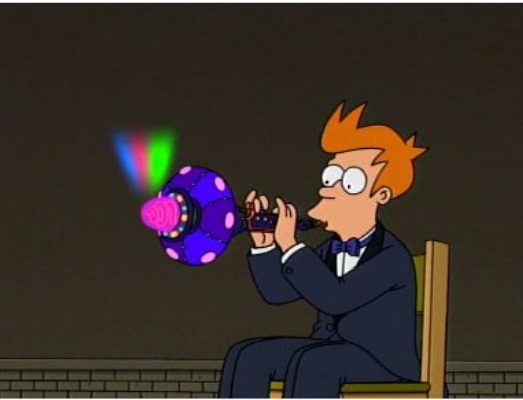Figure 1: Fry playing a Holophoner from the TV show Futurama
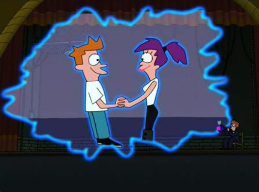Figure 2: When music is played from the Holophoner properly, the person’s thoughts are portrayed using a hologram.
This project aims to create an instrument similar to the Holophoner, named the Soundweaver. When music is played through a microphone, real-time color imagery will be produced onto a VGA screen based on the frequencies heard by the microphone. Essentially, the goal was to display abstract visuals that changed based on the music played.
There are two main parts to the design: the music analysis and the animation. The music analysis was done using a Fast Fourier Transform frequency analysis to calculate the frequencies and amplitudes of the sounds heard through the microphone. Then the frequencies were compared to the previous frequencies to determine the current mood of the music, and then change the colors on the screen. The animation was completed using an algorithm imitating a starling murmuration designed in Lab 2. Each boid had a state that involved its current position, velocity, and color. The VGA display was then broken up into a grid of tiles, and the color of each tile depends on the colors of the boids inside the tile.
High Level Design
Western music has two main types of keys: major and minor. In its most common form, pieces in a major key are typically brighter in sound. People tend to feel more excitement and happiness when these pieces are played. With pieces in minor keys, people tend to feel more calm or melancholic. The goal of this project was to reflect these emotions using colors on the VGA screen. People tend to feel happiness with green, sadness with blue, and anger with red. Therefore, the goal was to match the emotions of the sound with the color. There were two main parts of this design: the music analysis, which differentiated the keys from each other to find the mood (emotion) of the music, and the animation, which displayed the colors onto the VGA screen using a boid algorithm imitating starling murmurations. Figure 3 shows an HSV 360 degree color wheel. In our program, we use the degree value (starting with 0 degrees pointing straight up in the red section and increasing counter-clockwise) to represent colors. When the program averages or changes colors, it is using the degree value on this color wheel. This wide range of colors is made possible using Bruce Land’s 8-bit color VGA driver, which allows for more color values at the expense of screen resolution.
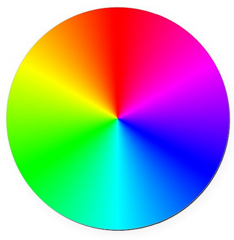Figure 3: Color Wheel from 8-bit coloring.
Music Analysis
To analyze the music, a sound input is broken up into intervals. A musical interval is the distance from one note to the next. For example, a major second is a step difference between the original note and the new note. A perfect fifth is three and a half steps away from the original note to the new note. Because the color value on a screen can be broken up into three sub-values for red, green, and blue, the possible intervals are broken up into three categories: major, minor, and dissonant. In simpler terms, the intervals are broken up into three moods: happy, sad, and angry.
Calculating the intervals of a new note takes two steps. The first step involves calculating the frequencies of the new note. This was done using a Fast Fourier Transform analysis based on Professor Hunter Adams’ Cooley-Tukey FFT program. This step takes samples at different frequencies and measures the amplitude of the voltage at each frequency. Second, the program iterates over all the frequencies to find the amplitude peaks to identify the notes played. For example, if a sound has the highest amplitude at a frequency of 440 Hz and that amplitude is comparatively well above that of other frequencies, then the note played was a singular A note.
Every iteration the FFT runs, the three frequencies with the highest amplitudes are identified. An amplitude threshold is then compared to the highest detected amplitude to determine if a new sound was played. If there was a new sound played, the differences in amplitude are then calculated for each of the three amplitudes to see if one, two, or three frequencies (up to a triad) were loud enough to be considered played frequencies, or if they were merely harmonics or outside noise. The algorithm then calculates the interval of the most recent highest frequency with the previous sound’s highest frequency. If two frequencies are played, then the interval between the lowest frequency and highest frequency is additionally calculated. Similarly, for three different frequences were played in the new sound, the intervals between the lowest frequency and the middle frequency and the middle frequency and the highest frequency are additionally calculated.
The intervals are calculated using a logarithmic ratio of frequencies known as cents. This equation is shown below in Figure 4:
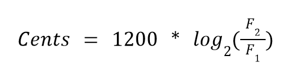Figure 4: Cents equation.
The difference between each interval is 100, allowing the program to easily calculate the intervals between the notes. Using C as an example, below in Figure 5 is the interval and its cents value:
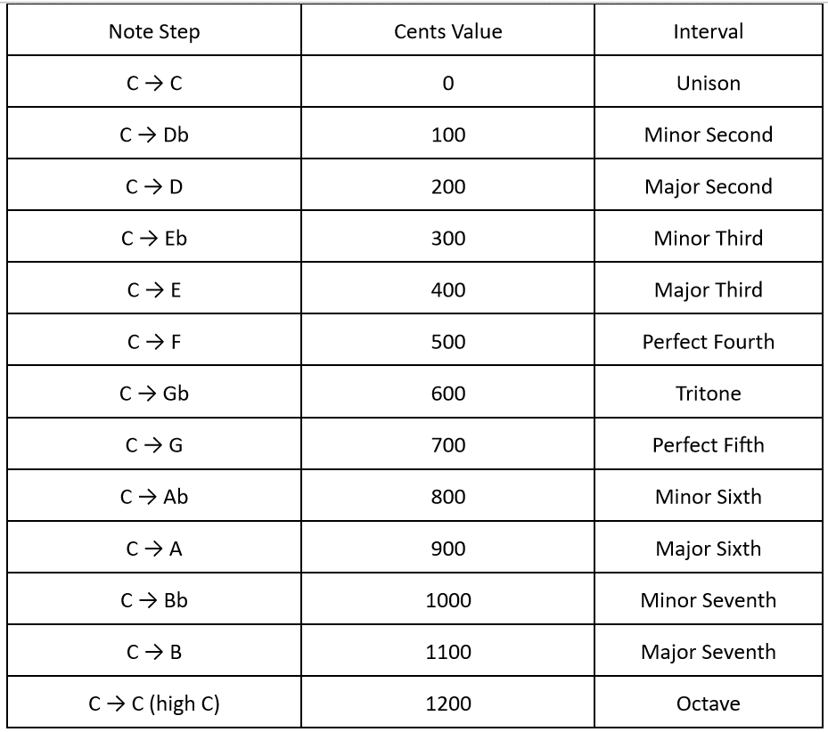Figure 5: Cents table.
Once the cents value is found, the last step is to match the interval with a color. Though intervals are not individually trapped to an emotion, for the purpose of this project, intervals are broken up into happy (green), sad (blue), and angry (red). The idea when splitting up the intervals is to have a generally balanced color gradient, allowing for a possibility for a large range of colors to appear on the screen. With this in mind, green was set to denote unison, major third, perfect fourth, and perfect fifth intervals. Blue would denote major second, minor third, minor sixth, major sixth, and octave intervals. Finally, red would denote minor second, tritone, minor seventh, and major seventh intervals.
Once the program determines the intervals, a predator boid would be first triggered to represent each interval. In a separate core running the boids algorithm, the predators that are turned on will both affect the color of the surrounding boids and chase them away, creating a splash effect. The second thing the algorithm does is calculate an overall mood. This is an average color based on the past twenty highest detected frequencies.
Animation
The animation on the VGA screen implements a modified version of the Boids algorithm under the hood. Figure 6 below shows an early test version of the program. The music analysis done on a separate core can turn on up to three predators and assign each an affecting color to spread to the boids that are within their chase range. In this version, the predators are always invisible. The predators will move throughout the screen space, and if there are no new notes, the boids will ignore them. However, once the program detects new notes, the predators will turn on, and the boids that are within the predatory range of the predators will turn away. These boids will also have their color set to the average of the affecting colors of the predators that are chasing them. Boids that are not in the predatory range of any predators will have their color shift towards the overall mood by 15 degrees.
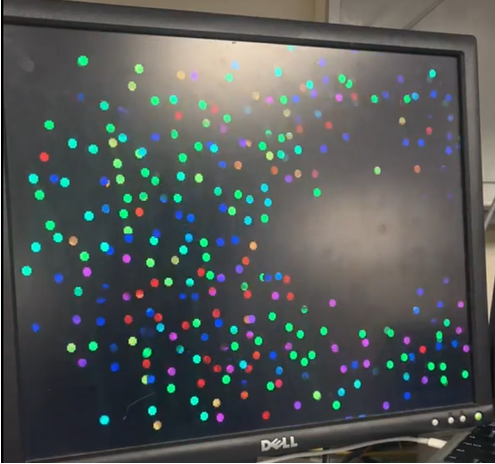Figure 6: Early boids implementation.
To complete the animation, the screen is split into square tiles, as shown in the Figure 7. After the Boids algorithm updates the position of a boid, its position gets mapped to the tile on the screen that contains it. When this happens, the boid’s color values gets added to the tile’s color accumulator value, and the tile’s boid counter increments. After all the boids have their effects on the tiles updated, each tile will calculate its color. Tiles containing no boids will have their color set to the overall mood color. Otherwise, the tile will have the average color of all of its contained boids (or the color accumulator divided by the boid counter). Predators do not directly affect tile color, but instead affect the boids which do affect tile color.
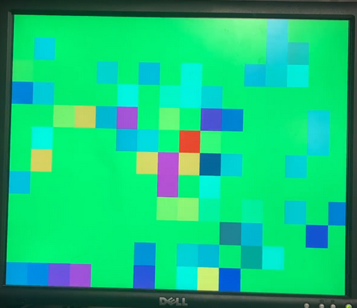Figure 7: Tiled animation.
Program Design
The program’s design involved two main sections: the animation and the music analysis. To avoid timing issues between sampling the ADC and animating to the VGA display, the animation thread was done on core 0 and the FFT analysis thread was done on core 1. Core 1 also had a serial thread that provided a user interface on the serial monitor and listen for user commands to change parameters. This was used to tune parameters to adjust our animation until we were satisfied. All threads used the Protothreads architecture provided by the course. Figure 8 illustrates the breakdown of the high level steps into program threads.
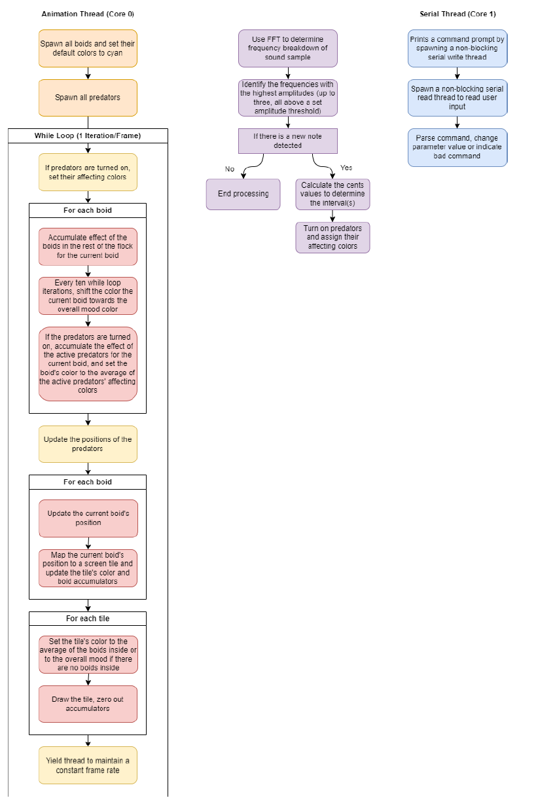Figure 8: Program threads.
Hardware Design
The hardware needed for the project is listed below:
1 Raspberry Pi Pico
1 Focusrite Scarlett 2i2 (or any audio interface)
1 Shure SM58 (or any microphone)
1 XLR cable (for the microphone)
1 3.5mm Audio Socket
1 VGA Display
1 VGA Connector
1 Button
2 1000 Ohm Resistor
2 680 Ohm Resistor
3 330 Ohm Resistor
1 220 Ohm Resistor
1 150 Ohm Resistor
2 100 Ohm Resistor
Figure 9: Wiring diagram.
The microcontroller used in this project is the Raspberry Pi Pico. There are 4 main connections to the Pico: a UART cable for a serial monitor on the computer, a button to reset the code and the device when needed, a 3.5 mm audio socket to connect the Pico to the microphone, and connections to the VGA display needed for use of 8-bit color. This project used a Shure SM58 microphone and a Focusrite Scarlett 2i2. The Scarlett 2i2 was powered by a computer with the necessary driver for the audio interface. The Shure SM58 was connected to the Scarlett 2i2 using an XLR cable. The Scarlett 2i2 was then connected to the 3.5 mm audio socket using an AUX cable. Instructions for the audio interface can be found through Focusrite’s website.
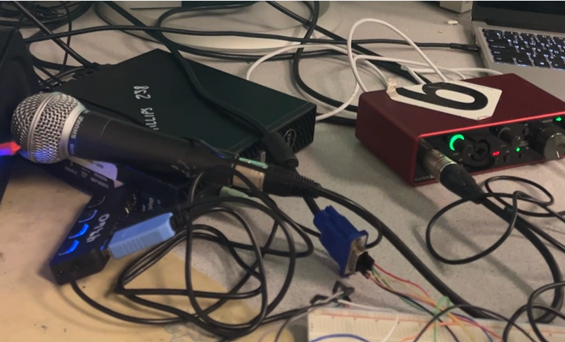Figure 10: The Shure SM58 is shown to the left, and the Focusrite Scarlett 2i2 is shown to the right in red. They are connected using an XLR cable.
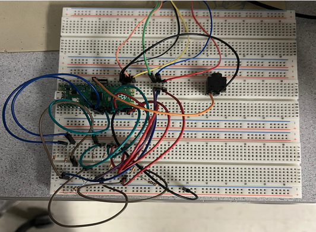 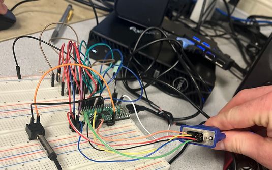Figure 11: Pictures of our hardware setup.
Results
In this project, we were able to create a live music visualizer that has some (in our opinion) very cool animations.
Demonstration Video 1
Demonstration Video 2
We found that slow piano music worked the best, since the frequencies of the music are very distinct, and it was clear when notes are being played versus not.
One major point of improvement would be getting the device to better detect new notes. Right now, if a note is held or if the music is really fast, there is a continuous "gap" in the boids flock due to the predator always being on. Some ideas to implement this improvement include speeding up the the sample rate and having a more relative amplitude comparator for detecting new notes rather than a hardcoded threshold. A relative amplitude comparator would compare the current peak amplitudes to the previous amplitudes, which would make the device more robust to different sound output devices and song styles (like loud versus soft).
In our development process, we developed the music analysis and music animation separately, verified they were both working, then combined the two features. To debug, we made use of serial monitor print statements to investigate the state of the program at various points and also the serial command interface to change parameters to attempt to trigger specific bugs.
One interesting bug we found was failing to map boid positions to the tiles, which was causing the program to freeze. This was the result of not guarding the boid pixel positions to stay within the bounds of the screen. Another interesting bug was using the 8-bit color VGA driver with our code. The bound checker in the driver allowed drawing to the last 5 horizontal pixels of the screen, but the bits for those pixels do not reset which led to some weird visualizations. Correcting the driver bound checks for drawing fixed this issue.
Conclusion
The team accomplished its goal to display abstract visuals that would change based on the music played. Using algorithms written by Cornell Professors Hunter Adams and Bruce Land, the team implemented 8-bit color and FFT analysis to accurately determine intervals and display a wide range of colors based on those intervals heard by the device. However, the resulting device did not meet expectations, and improvements can be made to better improve the design. One design improvement would be to better detect note changes. In the current code, the splash caused by a triggered predator does not change based on amplitude. Having the size of the splash be a function of the amplitude of the note can lead to clearer splashes and a better visualization of the music. An additional design improvement would be to achieve a smoother blend of colors. This would involve a finer resolution, which would involve using a microcontroller with more memory. An easier solution would be to connect neighboring colors, meaning that if a tile did not have a boid inside of it, the color would be the average of the surrounding tiles. On the hardware side, a possible improvement would be to convert the design into an instrument that uses a keyboard to control the notes rather than a microphone. This would prevent outside noise and disturbances from a microphone and give a direct connection to the microcontroller. These improvements will be pursued in future work with this project.
Though these changes would increase the appeal of the visuals outputted by the device, the current design is a great step in connecting sight and sound. The Soundweaver connects what we hear to what we see, connecting our senses in harmony together. As the project progresses outside of ECE 5760, hopefully the Soundweaver will become advanced enough to read our thoughts and turn fiction into reality.
References
- Hunter Adams’ Cooley-Tukey FFT program
- Bruce Land's 8-bit color VGA driver
- Mattie Lee (mll264), Eshita Sangani (ens47), and Janeth Manyalla (jim59) for their amazing website template.
Appendix
Appendix A
The group approves this report for inclusion on the course website.
The group approves the video for inclusion on the course Youtube channel.
Appendix B